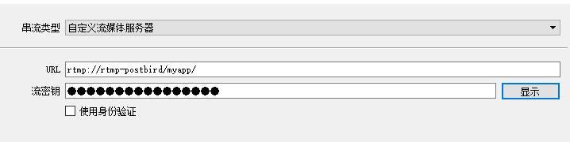
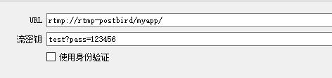
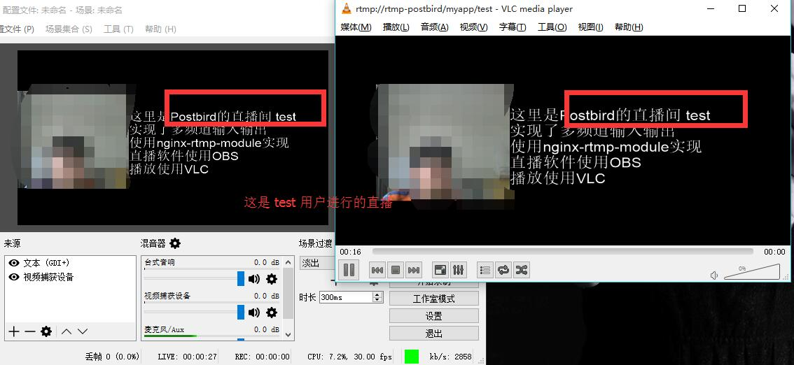
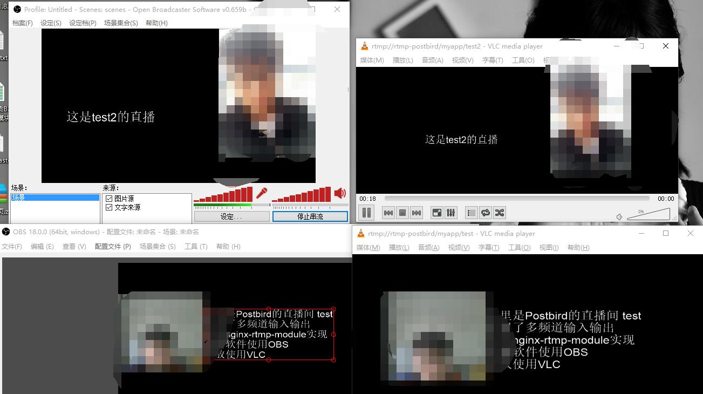
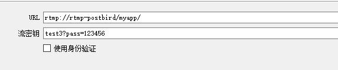
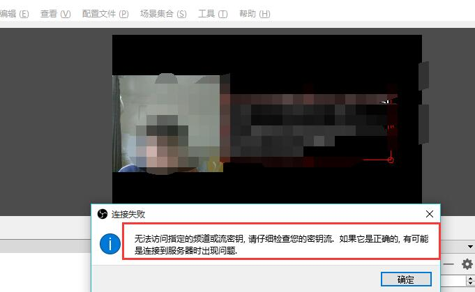

「自己开发直播」实现nginx-rtmp-module多频道输入输出与权限控制
之前写了一篇文章，利用nginx和nginx-rtmp-module实现直播。
不过，之前只是做到了能够直播而已，只能一个人推流，并没有实现多人多频道输入输出，也没有权限控制，只要知道rtmp的URL就能够推送。
本文是在之前文章的基础上继续的。
一、权限控制方面
说实话，我查这个查了很久，也没查出个所以然，最后还是花了半天的时间，研究了一下nginx-rtmp-module的文档，最后搞了半天才弄明白。
文档中主要有两个部分需要注意：
live配置的publish_notify部分
publish_notify中Notify的配置部分
1、live的publish_notify
所谓的publish_notify是涉及publish_notify默认是off的，主要涉及推送的过程中一些事件。
开启publish_notify即可进行Notify的配置操作。
publish_notify on;2、Notify的配置
Notify的配置相关是涉及直播的事件并执行回调代码。
比如：推流链接、直播开启、直播结束状态，然后异步调用http的链接，进行一些逻辑的处理。
主要的配置参数有下面这些：
- on_connect
- on_play
- on_publish
- on_done
- on_play_done
- on_publish_done
- on_record_done
- on_update
- ......
从上面的配置参数可以看出，能够触发连接、直播、输出、直播结束等等，从而能够进行权限验证、
比如，当触发推流的时候，通过 on_publish http://www.example.com/uri 进行权限控制，接收相关参数并进行控制，如果用户不存在，则不允许推流。
二、多频道输入输出
这里的多频道输入输出意思是:多个人直播，每个人有不同的输出地址。
1、直播推流端
多个人有不同的推流和直播地址，就涉及了直播参数，而实际上，各大平台直播的时候，除了地址，都有一个直播密钥或者是直播码。
以OBS举例，串流类型选择自定义流媒体服务器，然后会出现一个URL和流密钥。

而流密钥就是实现多频道输入输出的重点。
2、rtmp Publish配置
既然需要进行权限控制，就要使用publish，首先进行权限的验证，证明有推流权限。
所以rtmp的配置如下（最后会给出一个完整的配置示例）：
因为只是探讨权限控制，因此hls之类的不需要关心，我也注释了。
#设置直播的application名称是 myapp
application myapp{
live on; #live on表示开启直播模式
publish_notify on;
on_publish http://tp5.ptbird-ubuntu/on_publish.html;
#hls on;
#hls_path /tmp/hls;
#hls_fragment 2s;
#hls_playlist_length 6s;
}关键配置是：on_publish http://tp5.ptbird-ubuntu/on_publish.html;
后面的 http://tp5.ptbird-ubuntu/on_publish.html 是假设在web服务器上的处理程序，网上有的将这个逻辑假设在本机nginx，我是建议不要混在一起，直接在别的能够连接的web服务器上部署即可。
我是架设在我的另一台ubuntu kylin的web服务器上。
反正能访问的php处理就可以了，别的说多了也没用。hhhh
3、权限验证URL
一个示例的配置如下所示，这是一个模板配置示例。

流密钥的格式是：test?pass=123456，可以看出这个非常像url的get参数配置，test就是用户的name，而pass就是密码。
为什么没有name=test
- 因为name是rtmp on_publish的默认参数，name是不能更改的。
绝对不能使用GET['name']，而应该使用POST
- 一开始我总是使用get去获取参数，但是发现一直无法成功，也没办法验证 - -
- 后来网上查了查，发现不能使用get获取，虽然流密钥的格式像是get类型，但是必须使用POST获取参数。
自定义参数
- 除了name不能更改之外，其他的都是可以自定义参数的
- 比如pass=123456&check=123456这样的
三、代码验证权限
1、ThinkPHP5版本
这里使用php进行验证，我顺便将上面 http://tp5.ptbird-ubuntu/on_publish.html 这个url部署在一个thinkphp5的框架中。
因此实际上我是有一个路由的，才会使用html后缀的URL。
// 配置直播推送的url
Route::rule('on_publish','index/Publish/index');实际的逻辑很简单：
- 接收两个参数
- 通过数据库进行验证
返回验证信息
- 必须返回http头，返回2xx表示成功,3xx表示跳转,4xx表示失败
- 一般验证失败都是返回404就可以，一定返回标准的404头（一开始我一直验证失败，后面发现，就是返回的头的问题）
而处理的代码如下：
下面代码是基于thinkphp5来处理的，其中没有涉及数据库的操作，只是有两个参数test和test2两个用户，两个密码
而返回http头的状态也是用的thinkphp5的返回方式，下面会有第二种普通的处理方式。
<?php
/**
* Author: root
* Date : 17-3-19
* time : 下午4:58
* Site : www.ptbird.cn
* There I am , in the world more exciting!
*/
namespace app\index\controller;
use think\Request;
class Publish {
// index
public function index(Request $request){
// 接受name和pass param可以自动选择get或者是post
$name=$request->param('name');
$pass=$request->param('pass');
// 设置用户名和密码
$savename= "test";
$savepass = "123456";
if(empty($name) || empty($pass)){
echo "串码流不正确";
// 这个是thinkphp5的返回头信息的函数
return json('')->code(404)->header(['Not Found']);
}else{
if(strcmp($name,$savename)==0 && strcmp($pass,$savepass)==0){
// 默认是返回2xx的头，因此不需要进行控制
echo "串码流正确";
// 我在这里添加了另一个test2 和 123456的用户
}else if(strcmp($name,'test2')==0 && strcmp($pass,'123456')==0){
echo "串码流正确";
}else{
echo "串码流不正确";
return json('')->code(404)->header(['Not Found']);
}
}
}
}2、普通的php验证
下面的代码，是网上的代码，一个道理，就不多说了。
// ?user=user&pass=pass
@$name = $_POST['name'];
@$pass = $_POST['pass'];
$savename= test;
$savepass = password;
if(empty($name) || empty($pass)){
echo "串码流不正确!";
header('HTTP/1.0 404 Not Found');
}else{
if (strcmp($name, $savename) == 0 && strcmp($pass, $savepass) == 0) {
echo "串码流正确!";
} else {
echo "串码流不正确!";
header('HTTP/1.0 404 Not Found');
}
}四、直播与观看直播
经过上面的配置，现在可以进行多人直播。
上面的操作中我有两个用户，一个是test，另一个是test2，现在分别使用这两个用户进行直播。
1、test用户的直播 使用OBS 18

2、test2用户的直播 使用obs 0.65

3、test3用户的直播（失败）
将用户名设置成test3

因为返回了404，因此直播失败。

五、总结
on_publish可以实现权限控制，而其他的notify参数，比如on_connect可以设置当用户进行推流之后，就可以设置用户的直播状态为进行直播等等。
之后再继续研究....
文章版权：Postbird-There I am , in the world more exciting!
本文链接：http://www.ptbird.cn/nginx-rtmp-multi-channel.html
转载请注明文章原始出处 !
![]()
网上怎么找都找不好解决方法 在你这得到解决 3q 回答很简洁明了 谢谢
notify_method可设置GET，Default is POST
https://github.com/arut/nginx-rtmp-module/wiki/Directives#notify_method
Thank you for some other informative website. Where else may I get that type of info written in such an ideal way? I've a mission that I'm just now operating on, and I've been on the look out for such information. edkbcfefeadkaccd
大哥,最近在搞rtmp直播的,能加个QQ交流下不?